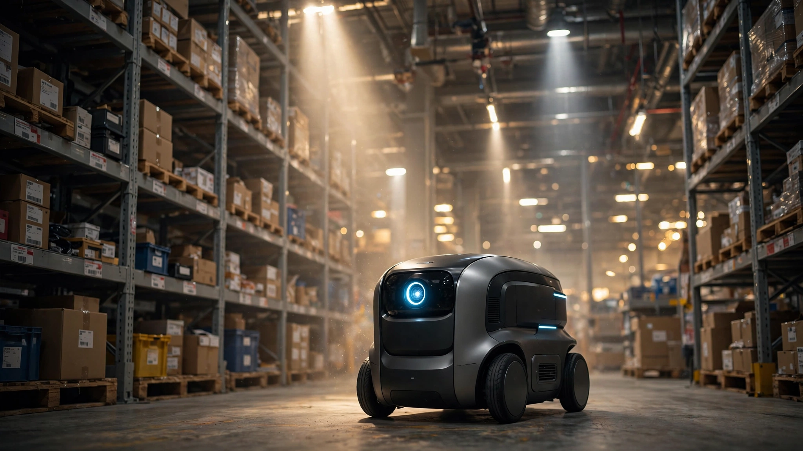

Mistral Says One Camera Replaces a $5,000 LIDAR Stack. The Math Works — Until You Read the Safety Code.
Robostral Navigate is an 8-billion-parameter model that lets warehouse robots navigate with a single RGB camera and plain-language commands. At $5,000 in sensor savings per robot across 30,000 new AMR deployments a year, the industry-wide prize is $150 million annually in hardware alone. But ISO 3691-4 may keep safety LIDAR bolted to the chassis regardless.

Five thousand dollars. That is what a typical autonomous mobile robot burns on LIDAR sensors before it moves a single pallet, before the first motor spins, before a warehouse manager even powers the fleet on. A SICK TiM320 runs $1,794 at quantity one. Its longer-range cousin, the TiM551, costs $3,358. Mount two for front-and-rear coverage, wire them into a sensor fusion stack, and the LIDAR alone accounts for 5 to 15 percent of a robot that sells for $50,000 to $150,000.
On July 8, Mistral AI announced it could delete that entire line item — not trim it, not halve it, but eliminate it completely from the bill of materials.
Robostral Navigate is an 8-billion-parameter model trained exclusively in simulation that accepts a single RGB camera feed and a natural-language command and outputs motor commands. No LIDAR, no depth cameras, no multi-sensor fusion. One camera, one model, one text prompt.
What a $20 Camera Does to AMR Economics
An industrial-grade USB camera costs $20 to $100, so call it $50 for two-shift warehouse duty. Against a LIDAR stack running $4,000 to $10,000, the per-unit savings land between $3,950 and $9,950 with a conservative midpoint of $5,000 per robot.
Scale that and the numbers command attention, because the global AMR market hit $3.2 billion in 2026, growing at 15.8 percent annually, with roughly 30,000 new units shipping per year, and at $5,000 per unit a complete shift to vision-only navigation would strip $150 million per year from the industry’s collective sensor bill.
But hardware is the smaller story, because what really bleeds money is everything LIDAR drags along: annual calibration at $1,000 to $3,000 per robot, multi-sensor fusion software licensing at $5,000 to $15,000 per robot, and site commissioning at $10,000 to $50,000 per facility that must be repeated whenever the warehouse layout changes, all of which an industry benchmarking guide confirms by putting a three-unit fleet at $340,000 fully deployed. A vision-only system would collapse the integration stack along with the sensor stack, bringing total cost reduction to $8,000 to $20,000 per robot, or $240 million to $600 million per year across the industry.
Theoretical. Three obstacles stand in the way.
Three Obstacles Between the Math and Reality
Sim-to-real is a documented failure mode. Robostral Navigate was trained entirely in simulation, and Mistral has disclosed neither the simulator, the number of environments, nor the domain-randomization techniques applied. Models achieving 95 percent success in virtual warehouses routinely drop to 60 or 70 percent on real floors with real fluorescent lighting, scuffed epoxy, and reflective metal surfaces. Epoch AI’s February 2026 assessment: navigation “succeeds commercially in food delivery and warehouse transport” but “transfer to new objects or settings stays rare.”
One camera cannot measure depth. LIDAR times photon round-trips at nanosecond precision; a single RGB camera guesses through learned monocular cues and temporal parallax, which is not close to the same thing and fails exactly at the margins where warehouses cannot tolerate failure: transparent shrink-wrap, specular reflections, thin structures like pallet rack uprights, same-color surfaces where texture provides no depth gradient at all. “Works most of the time” is a specification operations managers will not sign.
Safety standards do not care about your AI. ISO 3691-4 requires safety-rated sensing systems with certified performance levels for every autonomous mobile robot operating near humans, and compliance overwhelmingly relies on dedicated safety LIDAR scanners like the SICK TiM781S (€1,998 per unit) carrying certifications entirely independent of whatever navigation software runs on the main processor. No vision-only safety system has completed certification for industrial AMRs as of July 2026. Most deployments will still bolt safety LIDAR onto the chassis, cutting savings roughly in half.
What Mistral Actually Built
Robostral Navigate is not a standalone product but the first output of a vertically integrated pipeline that Mistral assembled in May by acquiring Emmi AI, a Linz-based physics simulation startup, for a reported €300 million, whose physics-informed neural networks for simulating airflow, heat transfer, and material stress are exactly the models needed to generate photorealistic warehouse training environments at scale. Navigation is the deliberate wedge: the most commercially validated robot capability, and the one where a single high-profile warehouse partnership could validate Mistral’s entire product family.
The Sensor Stack in One Table
| Approach | Sensor Cost | Annual Calibration | Safety Cert |
|---|---|---|---|
| Dual 2D LIDAR + camera | $4K–$7K | $1K–$3K | Established |
| Vision nav + safety LIDAR | $2K–$5K | $1K–$2K | Hybrid |
| Vision-only (no LIDAR) | $20–$100 | Minimal | Unproven |
Limitations
This analysis uses list-price LIDAR costs from component distributors; volume OEM pricing is typically 30 to 50 percent lower, reducing per-robot savings proportionally. Mistral has not published navigation success rates or real-world deployment data. Our 30,000-unit annual deployment estimate derives from market sizing reports whose methodologies vary; actual unit shipments are not publicly reported by most AMR vendors.
But the strongest counterargument is structural. Even if Robostral Navigate achieves flawless navigation, safety certification for vision-only industrial robots near humans does not exist in any major jurisdiction. ISO 3691-4 compliance requires safety-rated sensing hardware with certified performance levels. Until a vision-only safety system completes multi-year certification, every AMR in a human-occupied warehouse will carry at least one safety LIDAR scanner, and an AMR vendor who ships without safety-rated sensors assumes liability no insurer will underwrite. Economics: compelling. Compliance reality: a ceiling.
What You Can Do
If you are specifying AMR fleets for 2027, ask vendors whether they support vision-only navigation models. Not because you will deploy without LIDAR next year, but because decoupling navigation from sensor hardware gives you upgrade paths that today’s stacks do not. If you build robots, watch the safety-certification pipeline: whoever first achieves ISO 3691-4 compliance for vision-only safety unlocks the full per-unit savings and becomes the overnight price leader. For robotics investors, sensor vendors like SICK and Ouster collectively represent billions in revenue built on the assumption that physical sensing is irreplaceable. That assumption now has an expiration date.
Bottom Line
Mistral did not build a robot. It built a model that makes the most expensive sensor on a warehouse robot technically unnecessary for navigation: an 8-billion-parameter argument that $5,000 worth of spinning infrared can be replaced by a $50 camera and enough simulated training. Per-robot math is clean, at $150 million a year across new deployments, more if you count the integration and calibration overhead that LIDAR drags along. Regulatory math is not. Safety standards written for certified hardware do not bend for neural networks, however capable, and until they do, the most likely near-term outcome is a hybrid: vision for navigation, LIDAR for safety, savings halved but complexity reduced. Mistral is betting that the standards will catch up. Factory floors will wait to see the certification before they rip out the scanner.